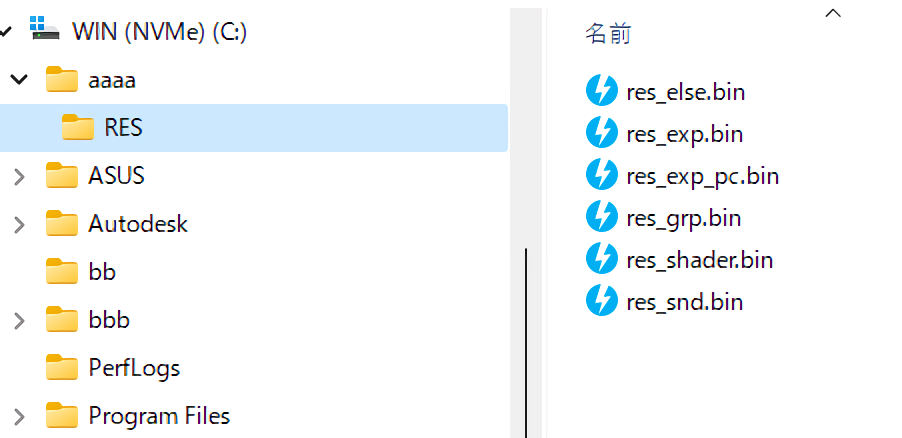
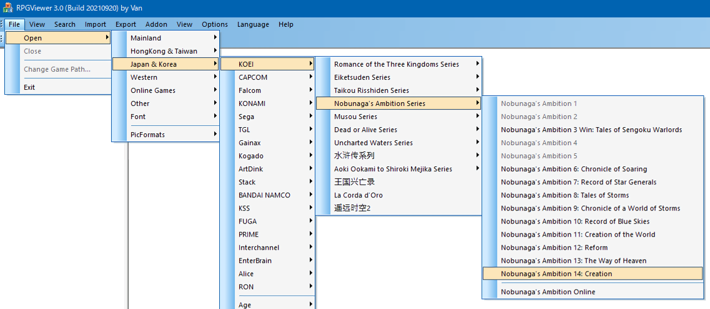
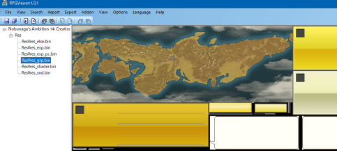

もしもすでに創造のパスが設定されてしまっていたら、メニューの「File」→「Change Game Path」で切り替えれば見れます。

一部の戦争中のユニットアイコンなど、取り出せない画像はありますが、
ほぼ全ての画像はres_grp.bin内に入っています。
Nobu14PicToolを利用すればRPGViewerでは取り出せない画像も取得できます。
RPGViewerでは取り出せなかった一部のアイコンやタイトル画面の画像もうまく取得できます。
また、画像の差し替えも可能です。